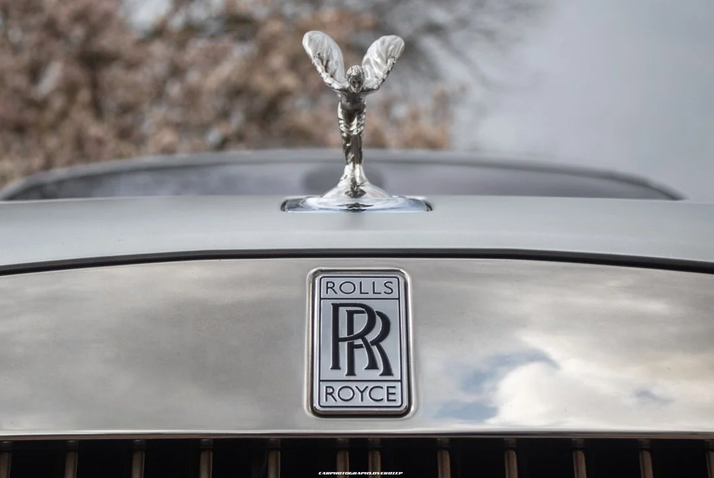

De Retainer
Voor opdrachtgevers die liever niets twee keer regelen. Een auto en een vaste chauffeur, beschikbaar voor de agenda.
Hetzelfde gezicht, dezelfde auto, week na week.
De meeste missies worden één voor één geschreven. Een retainer wordt eenmaal geschreven en loopt daarna — dezelfde vaste chauffeur, al vertrouwd met de vaste afspraken, de voorkeuren en de adressen die nooit veranderen. Niets wordt twee keer uitgelegd omdat niets twee keer geregeld wordt.
Een vaste chauffeur op naam
Aan u toegewezen, vertrouwd met het huishouden, het kantoor en de voorkeuren die niemand opschrijft.
Elke chauffeur beschikt over een VOG, tekent een geheimhoudingsverklaring en komt met referenties, vergunningen en de diploma's die het werk vraagt — chauffeur, beveiliging, assistentie. De screening gebeurt voordat een naam wordt voorgedragen, niet daarna.
Een gereserveerde auto
Vrijgehouden voor uw agenda en onderhouden op presentatieniveau, of hij die week nu rijdt of niet.
De auto is gedurende de looptijd uitsluitend van u. Niet 's ochtends uit het wagenpark gehaald, niet gedeeld met een andere missie, niet tussen opdrachten door terug in het register.
Voorrang in het register
Late wijzigingen, extra gasten en weekendoproepen worden opgevangen zonder elke keer te onderhandelen.
Een afgemeten week
Elke retainer kent een maximum aan weekuren en kilometers, vastgelegd in het contract en afgestemd op het ritme van uw week. Zij lopen niet door naar de week erna. Meer is altijd mogelijk, en wordt net als al het andere vooraf afgesproken.
Wanneer uw chauffeur er niet is
Vakantie en ziekte worden ingepland in plaats van geïmproviseerd. Wij houden voor elke opdrachtgever met een retainer een dossier bij — voorkeuren, het gebruikelijke reisschema, de dingen die het onthouden waard zijn — veilig bewaard en alleen gedeeld met wie het weten moet.
Is de vaste chauffeur afwezig, dan neemt een andere gescreende chauffeur de auto over, gebriefd op wat de dag vraagt en niet meer dan dat.
Buiten Nederland
Een chauffeur op retainer reist mee. De meeste weken spelen zich af tussen Amsterdam, Den Haag en de adressen daartussen; langere verblijven in het buitenland worden vooraf geregeld, omdat onze chauffeurs een eigen leven hebben en veertien dagen in een ander land evenzeer om hen heen wordt gepland als om u.
Hoe het begint
Er is geen standaardtermijn. De looptijd wordt op de situatie geschreven — de auto, het ritme van de week, hoe het jaar er naar verwachting uitziet — en volledig afgesproken voordat er iets getekend wordt.
Een proefperiode vooraf is mogelijk, in uw eigen auto of in een gehuurde, afhankelijk van beschikbaarheid en de huurvoorwaarden.
In uw taal
Nederlands en Engels standaard. Frans, Duits, Spaans, Italiaans, Arabisch en Russisch op afspraak. Bij een retainer wordt de chauffeur gekozen voor het huishouden, zodat de taal vóór de eerste dag vaststaat in plaats van er die dag pas achter te komen.
Eén nummer, op elk uur
Eén nummer, op elk uur beantwoord. Verschuift er om elf uur 's avonds iets in een ander land, dan neemt iemand op en kan ernaar handelen, in plaats van het te noteren voor de ochtend.